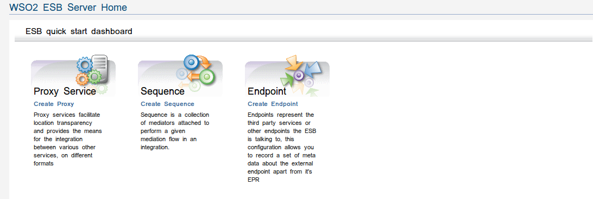

The WSO2 ESB offers a lean approach to creating a SOA by adding monitoring, management and virtualization to your existing service interactions. Its innovative design leads it to be one of the highest performance, lowest footprint, and widest interoperability integration systems available.
Figure1: WSO2 ESB Server Home Page
A proxy service acts as a service hosted in WSO2 ESB, and typically fronts an existing service endpoint. A proxy service can be created and exposed on a different transport, schema, WSDL, or QoS (such as WS-Security, WS-Reliable Messaging) other than the real service. It can mediate the messages before they are delivered to the actual endpoint, and the responses before they reach the client.
Use the Mediation Sequences page to add new sequences or edit existing sequences.
Use the Endpoint Management feature to add, remove and change endpoints.